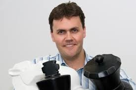

A personal history of making, detours, and showing up.
ORIGIN
STORY.
Before the titles, portfolios, and opening days, there was a kid from Houma who liked comic books, computers, music, photography, games, and taking things apart to understand how they worked.
Houma, Louisiana.
I grew up with an identical twin, an elementary-school-teacher mother, and an oil-field-electrician father. That combination—education, practical ingenuity, and somebody always nearby to build with or compete against—left a mark.
Home taught me that imagination and usefulness belong together. An idea gets more interesting when you can make it real, share it with somebody else, and learn from what happens next.


Comic books. Costumes. Computers. Making.
The original Keynote called out five things that defined my youth. The exact list kept changing, but the pattern did not: stories, technology, performance, art, and the irresistible urge to make something.
Long before “immersive experience” was a job description, I was drawn to worlds you could step into and systems you could play with. Disney was part of that vocabulary early.


LSU to Carnegie Mellon.
At Louisiana State University, I studied computer science with a digital-media minor—and kept photography, music, and game-making in the mix. The goal was never to choose between technical and creative work. It was to become fluent enough in both to connect them.
Carnegie Mellon’s Entertainment Technology Center made that connection tangible. Building Virtual Worlds, rapid prototyping, multidisciplinary teams, and Randy Pausch’s insistence on pursuing childhood dreams turned curiosity into a practice.

“The brick walls are there for a reason.” — Randy Pausch
Disney, from the mailroom lesson to Imagineering.
My early Disney years moved through R&D, Buena Vista Games, Parks new technology, PhotoPass, Adventures by Disney, Living Characters, and emerging digital media. Later, at Walt Disney Studios Home Entertainment, I led creative and technical development across new digital platforms and interactive products.
At Walt Disney Imagineering, the scope expanded into portfolio leadership for interactive and immersive attractions: Test Track, MagicBand and personalized park experiences, Star Wars—including Millennium Falcon: Smugglers Run—Innoventions, Marvel development, and more.



From prototype to an entire fleet.
At Carnival Corporation, I took on end-to-end delivery leadership for Princess MedallionClass during a critical stage—helping stabilize and scale an approximately $1B transformation across the fleet.
It was a lesson in the distance between a compelling idea and an operating system: hundreds of collaborators, thousands of service points, physical environments, hospitality, commerce, entertainment, digital experience, and long stretches aboard ships evolving the platform in real conditions.

Building the company, not only the experience.
Since founding Dusty Cupboard Company in 2021, the work has widened again: executive production, consulting, venture building, commercial strategy, financing, leases, vendor negotiations, construction, and the practical work of getting ambitious experiences open.
Along the way came product, growth, and business-development leadership at Hunt A Killer; guest-experience transformation at Wynn Resorts; work with Warner Bros., Secret Cinema, and cultural organizations; and the continuing development of Next Byte’s first location.
Founder / Executive Producer
Product, growth & business development
Onsite interactive guest experience
First location in development
Heather, the kids, and the pets.

Home is the most important production of all: life with Heather, our kids, and a cast of pets who make every schedule more interesting and every accomplishment more meaningful.
They are the reason I care about building experiences that create connection, reward curiosity, and become stories people want to retell.
The story is still under construction.
The work keeps changing. The through-line does not: stay curious, make the difficult thing clearer, help the team move, and build something that holds up when people finally step inside it.